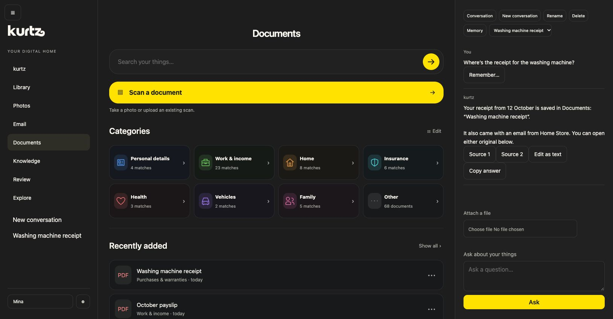
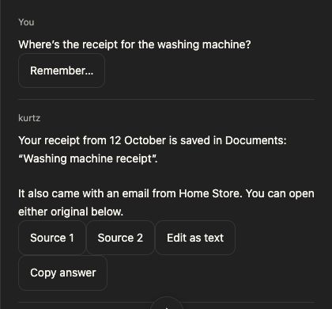
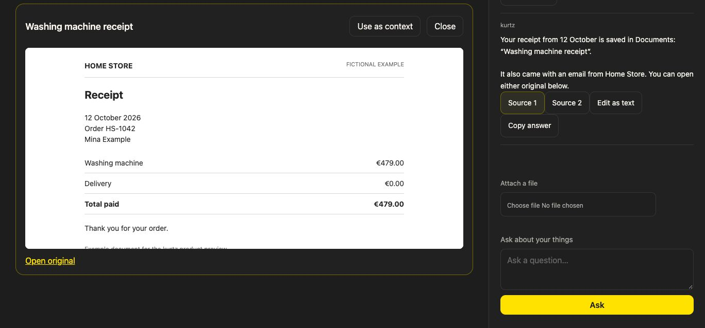
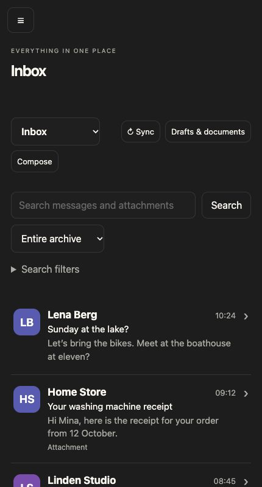

Meet your private digital home
Your life is more
than your life admin.
kurtz brings your documents, email, photos and films together.
With a private AI assistant to help you find what you need
and get on with your day.

Your assistant, with your things
Start with what’s
on your mind.
You remember buying it. You don’t remember where you put the receipt. Ask kurtz, in your own words.
“Where’s the receipt for the washing machine?”
In this example, the assistant finds the saved document and the email it arrived with. The sources stay attached to the answer, so you can check the originals.
And here’s the receipt
Go straight
to the original.
Open the document beside the conversation.
Read it for yourself. Keep the context.


A place for the rest of life, too
More than
paperwork.
The email with the attachment. The photos from the weekend. The film you’ve been meaning to finish. Your own collection, with a familiar way in.
- DocumentsFind, scan and read
- EmailYour inbox and archive
- PhotosYour gallery and albums
- Films & seriesYour library, ready to play


Current email integration: WEB.DE.
Built around a simple belief
Your digital life.
Actually yours.
Your private life should have a home that belongs to you. kurtz is being built to keep your collection and your AI on hardware you control.
With local AI, your private content doesn’t have to travel to an AI provider to be useful.
What runs where?
The first version is being developed around an Apple Silicon Mac at home, with access through kurtz on Mac, iPhone, iPad and in the browser.
Connected services, such as your email provider, still have their own data arrangements. External AI is an optional, explicit choice. kurtz doesn’t automatically switch from a local model to the cloud.
A first look at what’s next
In private development.
kurtz is in private development. We’re taking the time to make
the everyday feel simple. A public release date and pricing
haven’t been announced yet.
Our standalone video player is available now.